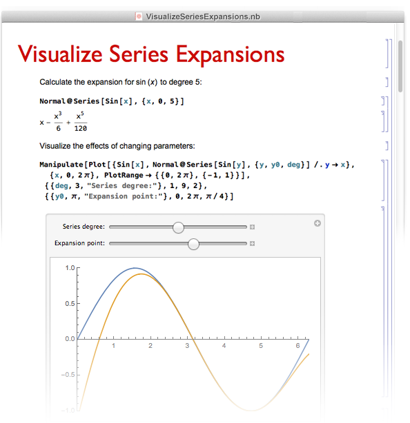
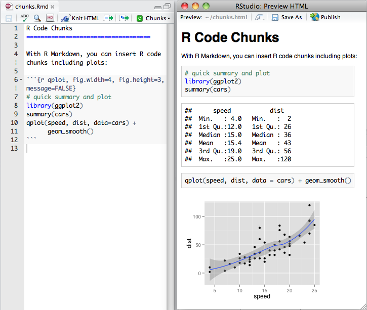
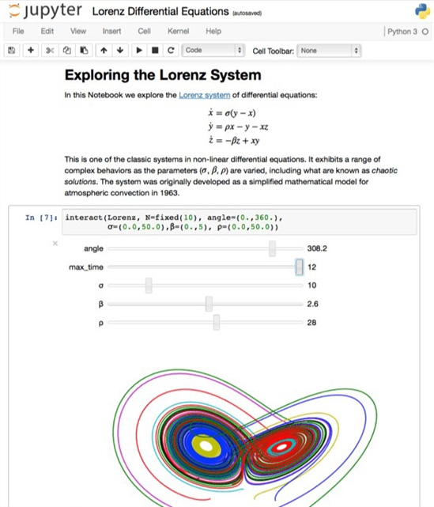
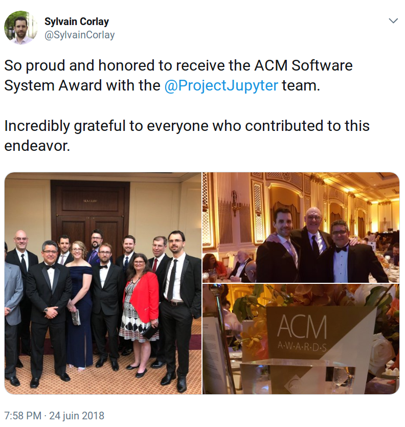
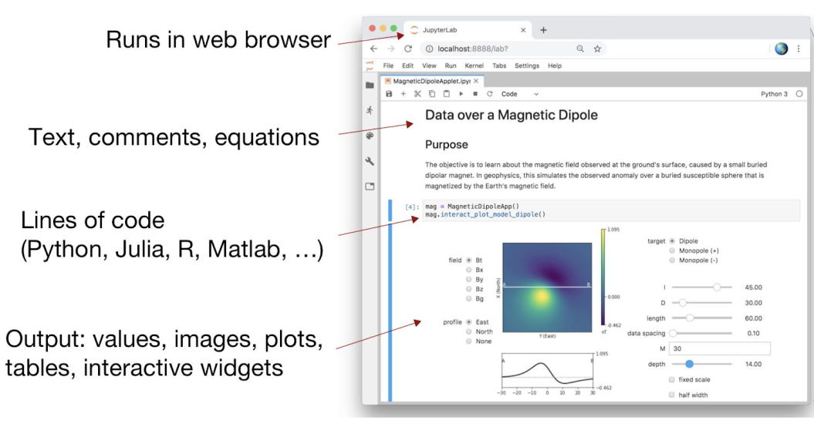
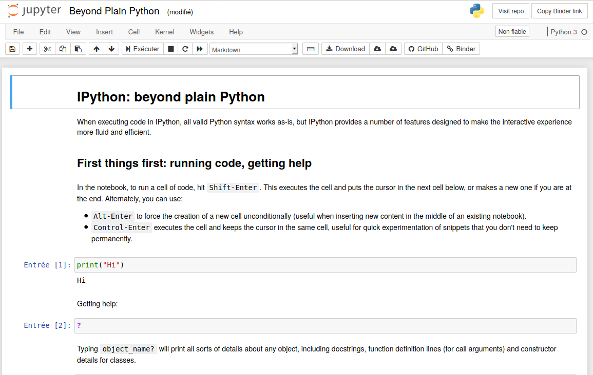
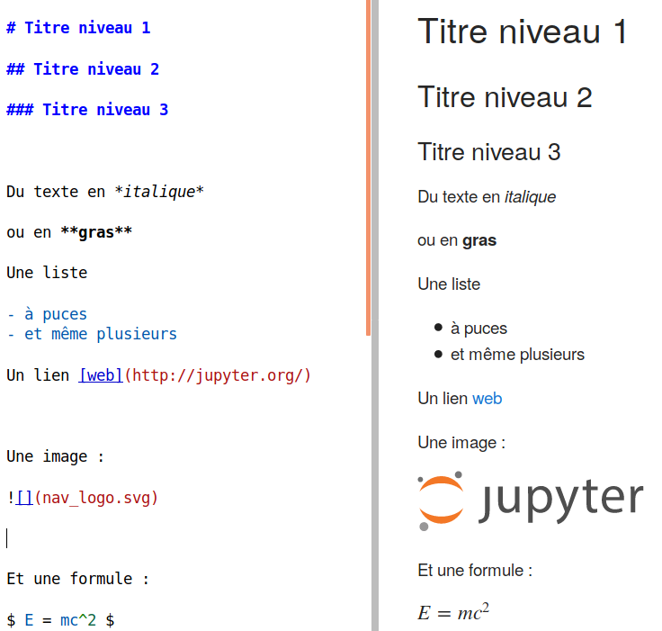
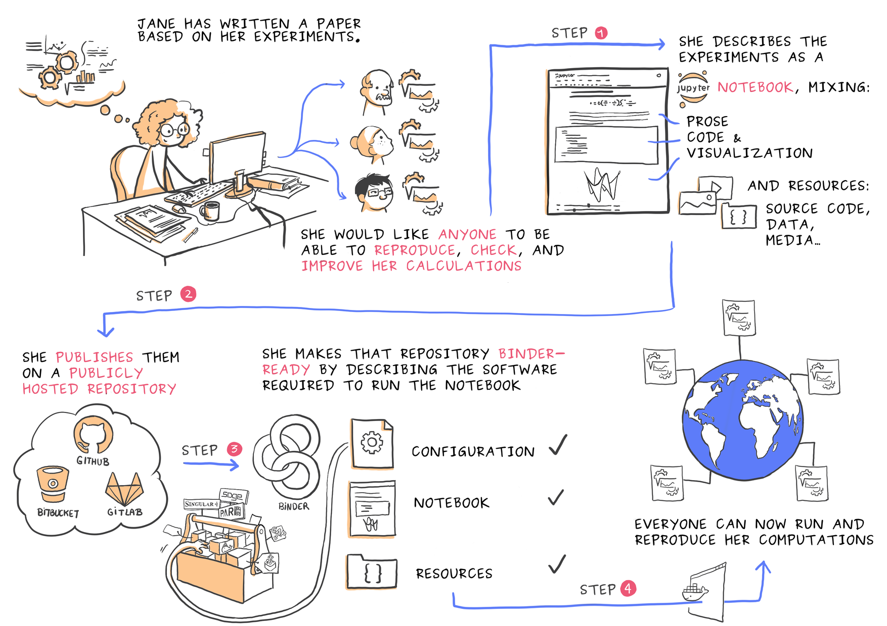

# Jupyter et ses notebooks <br /> <br /> <br /> 2021 <div class="container" style="margin-top: 50px;"> <div class="col"> <img src="assets/img/Universite_Paris_logo_horizontal_2000px.png" height="90px" style="vertical-align:midle;"> </img> </div> <div class="col"> </div> <div class="col" style="font-size: 1.2rem; text-align:right;"> Pierre Poulain <br /> pierre.poulain@u-paris.fr <br /> @pierrepo </div> </div> <br /> <br /> <div style="position: fixed; left: 0px; bottom: 20px; z-index: 31; font-size: 15px; line-height: 1; color: #c0c0c0;"> <p> Except where otherwise noted, this content is licensed under a Creative Commons Attribution-ShareAlike 4.0 International license (CC BY-SA 4.0). </p> </div> --- <!-- .slide: style="text-align: left;" --> ## Objectifs d'apprentissage - Décrire l'écosystème Jupyter. - Créer un notebook Jupyter. - Éditer des cellules en Markdown. - Expliquer les limites d'usage d'un notebook. --- <!-- .slide: style="text-align: left;" --> ## Notebook (en science) - « Cahier électronique d'analyses » <!-- .element: class="fragment" --> - Document : <!-- .element: class="fragment" --> - code + résultats + graphiques - explications + images + formules mathématiques... <br /> <br /> <div class="fragment" style="margin-top: 100px;"> Concept de « <em>Literate programming</em> » de Donald E. Knuth (1984) : <cite>Treat a program as literature understandable to human beings</cite> </div> ---  </img> <div class="ref" style="text-align: left;"> Source : <a href="https://www.wolfram.com/language/fast-introduction-for-math-students/en/notebook-documents/">Wolfram / Mathematica</a> </div> ---  </img> <div class="ref" style="text-align: left;"> Source : <a href="https://rmarkdown.rstudio.com/authoring_quick_tour.html">R Markdown Quick Tour</a> </div> ---  </img> <div class="ref" style="margin-top: 10px;text-align: left;"> Source : <a href="https://sinews.siam.org/Details-Page/jupyter-tools-for-the-life-cycle-of-a-computational-idea">Jupyter: Tools for the Life Cycle of a Computational Idea</a>, Siam News, 2018. </div> --- <!-- .slide: style="text-align: left;" --> ### Une idée d'hier, aujourd'hui techniquement possible... <br /> <div style="text-align: center;"> #### The Scientific Paper Is Obsolete </div> <div class="ref"> Source : <a href="https://www.theatlantic.com/science/archive/2018/04/the-scientific-paper-is-obsolete/556676/">The Atlantic</a>, 05/04/2018. </div> --- <!-- .slide: style="text-align: left;" --> ### Une idée d'hier, aujourd'hui techniquement possible... <br /> *An open RNA-Seq data analysis pipeline tutorial with an example of reprocessing data from a recent Zika virus study* : - [papier](https://f1000research.com/articles/5-1574/v1), F1000 Research, Wang & Ma'ayan, **2016**. - [notebook](http://nbviewer.jupyter.org/github/maayanlab/Zika-RNAseq-Pipeline/blob/master/Zika.ipynb) --- <!-- .slide: style="text-align:left;font-size:2rem;"--> ### Des perspectives <div class="fragment" style="margin-top:50px"> <a href="https://www.nature.com/news/interactive-notebooks-sharing-the-code-1.16261">Interactive notebooks: Sharing the code</a>, Shen, Nature, 2014. <div style="font-style:italic;font-size:2rem;"> "We used to speak two different languages. I would talk about the biology and she would talk about coding. Now we have common ground; we can <strong>communicate to each other better</strong>. This accelerates our research." she says. </div> </div> <br /> <div class="fragment" style="margin-top:50px"> <a href="https://www.nature.com/articles/d41586-018-07196-1">By Jupyter it all makes sense</a>, Perkel, Nature, 2018. <div style="font-style:italic;font-size:2rem;"> Thanks to an <strong>improved interface</strong> and tools for <strong>running in the cloud</strong>, take-up of the computational notebook is rocketing </div> </div> </div> --- ## Projet Jupyter <!-- .slide: style="text-align: left;" --> <div class="container"> <div class="col fragment"> <img src="assets/img/jupyter-logo.svg" height="250px" style="vertical-align:midle;"> </img> <https://jupyter.org/> <div style="color:#b9b9b9;"> 2001 - F Pérez (iPython) </div> 2014 - F Pérez & B E Granger </div> <div class="col fragment">  </img> </div> </div> --- <!-- .slide: style="text-align: left;" --> ## Jupyter notebook <br /> - « cahier électronique d'analyses » - dans un navigateur web <!-- .element: class="fragment" --> - Julia, Python, R, C++... <!-- .element: class="fragment" --> - code + résultats + graphiques + explications + formules...<!-- .element: class="fragment" --> - export : py, R, md, html, pdf <!-- .element: class="fragment" --> <br /> <br /> <div class="fragment" style="margin-top: 150px; font-size: 1.5rem;"> Une intro : <a href="https://sinews.siam.org/Details-Page/jupyter-tools-for-the-life-cycle-of-a-computational-idea">Jupyter: Tools for the Life Cycle of a Computational Idea</a>, Siam News, 2018. </div> ---  </img> <div class="ref" style="margin-top: 10px;text-align: left;"> Source : <a href="https://speakerdeck.com/lheagy/jupyter-meets-the-earth-from-geophysical-inversions-to-open-collaborative-geoscience">Jupyter meets the Earth: from geophysical inversions to open, collaborative geoscience</a>, Lindsey Heagy, 2019. </div> --- <!-- .slide: style="text-align: left; font-size: 2rem;" --> ## Jupyter Notebooks <div class="fragment"> +9,7 millions notebooks sur GitHub <div class="ref"> Source : <a href="http://nbviewer.jupyter.org/github/parente/nbestimate/blob/master/estimate.ipynb">Estimate of Public Jupyter Notebooks on GitHub</a> (01/12/2020) </div> </div> <div class="fragment" style="margin-top:50px"> Utilisés en 1re année à Berkeley (1800 étudiants) <br /> <cite> "There would have been too many obstacles for students to easily gain access to the tools and data that they need." </cite> <div class="ref"> Source : <a href="https://data.berkeley.edu/news/coursefuture">The course of the future – and the technology behind it</a> </div> </div> <div class="fragment" style="margin-top:50px"> Utilisés chez Google, Microsoft, IBM, Bloomberg, Nasa, SoundCloud, NetFlix, La banque mondiale <a href="https://jupyter.org/">...</a> </div> <div class="fragment" style="margin-top:50px"> <a href="https://qz.com/1417145/economics-nobel-laureate-paul-romer-is-a-python-programming-convert/">This year’s Nobel Prize in economics was awarded to a Python convert</a> <div style="font-style:italic;font-size:2rem;"> "Instead of using Mathematica, Romer discovered that he could use a Jupyter notebook for sharing his research." (2018) </div> </div> --- <!-- .slide: style="text-align: left;" --> ## Exemples <br /> [A gallery of interesting Jupyter Notebooks](https://github.com/jupyter/jupyter/wiki/A-gallery-of-interesting-Jupyter-Notebooks) <br /> <br /> [Bioinformatics with Python Cookbook](https://github.com/tiagoantao/bioinf-python/blob/master/notebooks/Welcome.ipynb) ([FastQ files](https://github.com/tiagoantao/bioinf-python/blob/f2e05df2d7baa54f9fbbc246b2526ee57d8b451c/notebooks/01_NGS/Working_with_FASTQ.ipynb)) ([PDB files](https://github.com/tiagoantao/bioinf-python/blob/f2e05df2d7baa54f9fbbc246b2526ee57d8b451c/notebooks/06_Prot/Stats.ipynb)) <br /> <br /> Génération de notebooks : [BioJupies](https://amp.pharm.mssm.edu/biojupies/) / GEO : GSE116087 --- <!-- .slide: style="text-align: left;" --> ## L'écosystème Jupyter <div style="text-align: center;"> Environnement « classique »  </div> <br /> --- <!-- .slide: style="text-align: left;" --> ## L'écosystème Jupyter : Jupyter **lab** <div class="fragment"> <div style="text-align: center;"> Environnement de développement et d'analyse <img src="assets/img/jupyterlab.png" height="400px"> <div class="ref" style="margin-top:-30px;"> Source : <a href="https://blog.jupyter.org/jupyterlab-is-ready-for-users-5a6f039b8906">Project Jupyter</a>, CC BY-SA. </div> </div> <br /> <div style="font-size:1.2rem;"> vidéo : <a href="https://www.youtube.com/watch?v=w7jq4XgwLJQ">JupyterLab: The Next-Generation Jupyter Frontend</a>, 2017. <br /> article : <a href="https://blog.jupyter.org/jupyterlab-is-ready-for-users-5a6f039b8906">JupyterLab is Ready for Users</a>, 2018. </div> </div> --- <!-- .slide: style="text-align: left;" --> ## Installation Depuis un environnement conda : ``` $ conda install -c conda-forge jupyterlab ``` Lancement : ``` $ jupyter lab ``` Pour l'interface « classique » : ``` $ jupyter notebook ``` --- <!-- .slide: style="text-align: left;" --> ## Démo [Try Jupyter](https://jupyter.org/try) --- <!-- .slide: data-background="#a1f4c5" style="text-align:left;font-size:2rem;"--> ## Exercice 1 Notebook `intro_Python.ipynb` / `intro_R.ipynb` <br /> <br /> <https://pierrepo.github.io/intro-jupyter/> --- <!-- .slide: style="text-align:left; "--> ## Markdown <br /> - Langage de balises *simple* - Utilisé pour la partie « littérature » des notebooks <br /> <br /> <br /> <div class="fragment"> Références : - https://fr.wikipedia.org/wiki/Markdown - https://guides.github.com/features/mastering-markdown/ - [Markdown Syntax cheat sheet](https://guides.github.com/pdfs/markdown-cheatsheet-online.pdf) - [The Ultimate Markdown Guide (for Jupyter Notebook)](https://medium.com/analytics-vidhya/the-ultimate-markdown-guide-for-jupyter-notebook-d5e5abf728fd) </div> ---  </img> --- <!-- .slide: data-background="#a1f4c5" style="text-align:left;font-size:2rem;"--> ## Exercice 2 Notebook `markdown.ipynb` <br /> <br /> <https://pierrepo.github.io/intro-jupyter/> --- <!-- .slide: data-background="#a1f4c5" style="text-align:left;font-size:2rem;"--> ## Exercice 3 <br /> <br /> <https://pierrepo.github.io/intro-jupyter/> --- <!-- .slide: data-background="#a1f4c5" style="text-align:left;font-size:2rem;"--> ## Exercice 4 Notebook `intro_Python.ipynb` / `intro_R.ipynb` <br /> <br /> <https://pierrepo.github.io/intro-jupyter/> --- <!-- .slide: style="text-align:left; "--> ## Conclusion Notebooks Jupyter : - Polyvalents (Python, R, Bash...) - Utiles pour l'**analyse exploratoire** et le **reporting** - Interface d'**échange** et de **communication** entre biologiste / bioinformaticien <div class="fragment" style="margin-top: 50px;"> On dit ce qu'on fait, pourquoi on le fait et ce qu'on obtient. On [accompagne](https://github.com/pierrepo/autoclasswrapper), on explique des résultats ou des analyses. </div> <div class="fragment" style="margin-top: 50px;"> ⚠️ Attention : - On ne développe pas un gros code Python dans un notebook. </div> --- <!-- .slide: style="text-align:left;font-size:1.5rem;"--> ## Pour aller plus loin... Ten simple rules for writing and sharing computational analyses in Jupyter Notebooks<br /> Rule et al., *PLOS Comput. Biol.*, 2019.<br /> DOI [10.1371/journal.pcbi.1007007]( https://doi.org/10.1371/journal.pcbi.1007007) Using interactive digital notebooks for bioscience and informatics education<br /> Davies et al., *PLOS Comput. Biol.*, 2020.<br /> DOI [10.1371/journal.pcbi.1008326](https://doi.org/10.1371/journal.pcbi.1008326) Jupyter: Thinking and Storytelling With Code and Data<br /> Granger et Perez, *Computing in Science & Engineering*, 2021.<br /> DOI [10.1109/MCSE.2021.3059263](https://doi.org/10.1109/MCSE.2021.3059263) <div class="fragment" style="margin-top: 50px;"> Dashboarding avec Voila : - [vidéo](https://www.youtube.com/watch?v=VtchVpoSdoQ), M. Breddels et M. Renou, SciPy 2019. </div> <div class="fragment" style="margin-top: 50px;"> [JupyterCon](https://jupytercon.com/) 2020 : 5-17 octobre ([videos](https://www.youtube.com/c/JupyterCon/videos)) </div> --- <!-- .slide: style="text-align:left;font-size:1.5rem;"--> ## Pour aller faire plus de reproductibilité Using Jupyter for reproducible scientific workflows<br /> Beg et al., *Computing in Science & Engineering*, 2021.<br /> DOI [10.1109/MCSE.2021.3052101](https://doi.org/10.1109/MCSE.2021.3052101)  </img> <div class="ref" style="text-align: left;"> Source : <a href="https://zenodo.org/record/4421040">Juliette Taka et Nicolas M. Thiéry, Publishing reproducible logbooks explainer comic strip, CC BY-SA</a> </div> ---